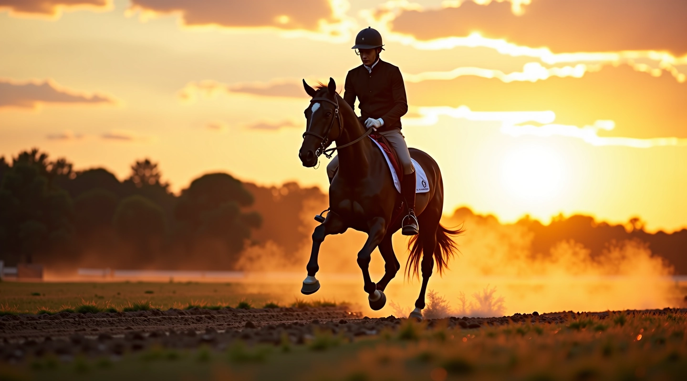
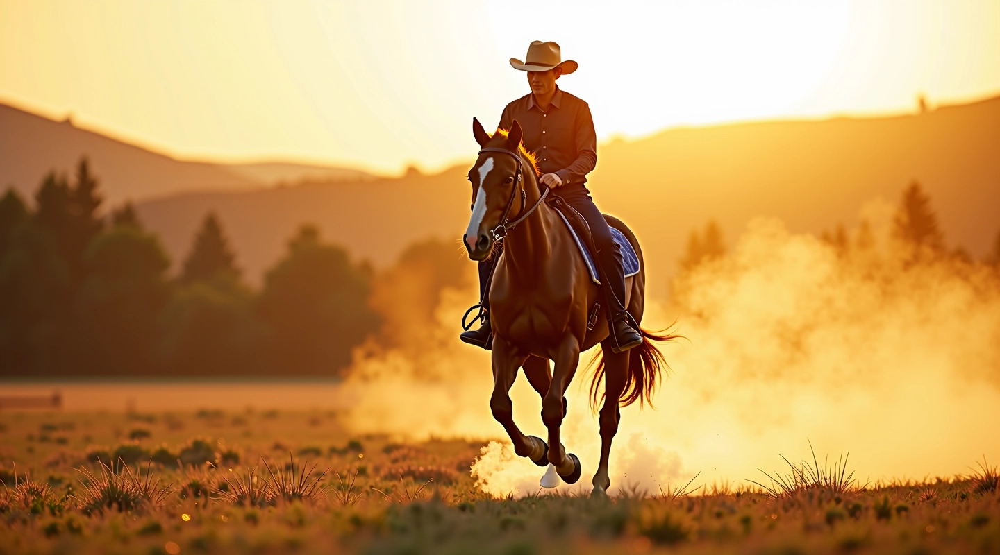
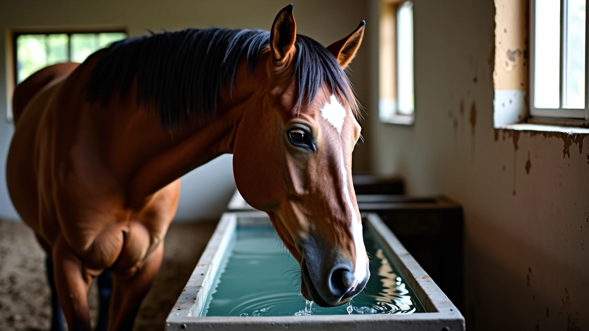

برنامج التدريب التدريجي لبناء التحمل
كيفية بناء قدرة التحمل بشكل آمن وفعّال على مدى عدة أسابيع. يبدأ من الأساسيات ويتدرج تدريجياً إلى سباقات طويلة دون إرهاق الحصان أو التسبب في إصابات.
اقرأ المزيد
برامج تدريب علمية وعملية لبناء قدرة التحمل بشكل آمن وفعّال
موارد تعليمية شاملة تساعدك على فهم أفضل الممارسات في تكييف الخيل
كيفية بناء قدرة التحمل بشكل آمن وفعّال على مدى عدة أسابيع. يبدأ من الأساسيات ويتدرج تدريجياً إلى سباقات طويلة دون إرهاق الحصان أو التسبب في إصابات.
اقرأ المزيدتمارين وطرق علمية لتقوية أرجل وجسم الحصان دون التسبب في إصابات. تعرّف على أساسيات التقوية السليمة والتي تحقق النتائج المرغوبة.
اقرأ المزيدما يحتاجه الحصان من سوائل وغذاء لأداء أفضل في السباقات الطويلة. جداول تغذية مجربة من محترفين مع نصائح عملية للتطبيق الفوري.
اقرأ المزيدعملية منظمة وعملية تضمن تطوراً آمناً وسريعاً
فحص شامل لحالة الحصان الصحية والبدنية وتحديد نقاط القوة والضعف
تمارين أساسية لتقوية العضلات وتحسين المرونة والتنسيق الحركي
رفع مستوى الحمل التدريبي تدريجياً مع مراقبة دقيقة لاستجابة الحصان
برامج محاكاة للسباق الفعلي مع التركيز على الاستعافة والتغذية السليمة
تجربتنا وخبرتنا في مجال تكييف الخيل
سنة التأسيس
أدلة عملية شاملة
صفحات معلومات
متخصصون في التحمل
التحسّن الملحوظ في قدرات الحصان
كل ما تحتاجه لتحقيق أهدافك
تواصل معنا اليوم واحصل على استشارة مجانية من فريق متخصصين في تكييف الخيل لسباقات التحمل. نحن هنا لمساعدتك في بناء برنامج تدريبي مخصص لحصانك.
ابدأ الآناستكشف أفضل المقالات والأدلة التدريبية

كيفية بناء قدرة التحمل بشكل آمن وفعّال على مدى عدة أسابيع. يبدأ من الأساسيات وينتهي بسباقات طويلة.
اقرأ الدليل الكامل
تمارين وطرق علمية لتقوية أرجل وجسم الحصان دون التسبب في إصابات. أساسيات التقوية السليمة.
اقرأ الدليل الكامل
ما يحتاجه الحصان من سوائل وغذاء لأداء أفضل. جداول تغذية مجربة من محترفين.
اقرأ الدليل الكاملنحن نستخدم ملفات تعريف الارتباط لتحسين تجربتك على الموقع. باستخدام الموقع، فإنك توافق على استخدام هذه الملفات.